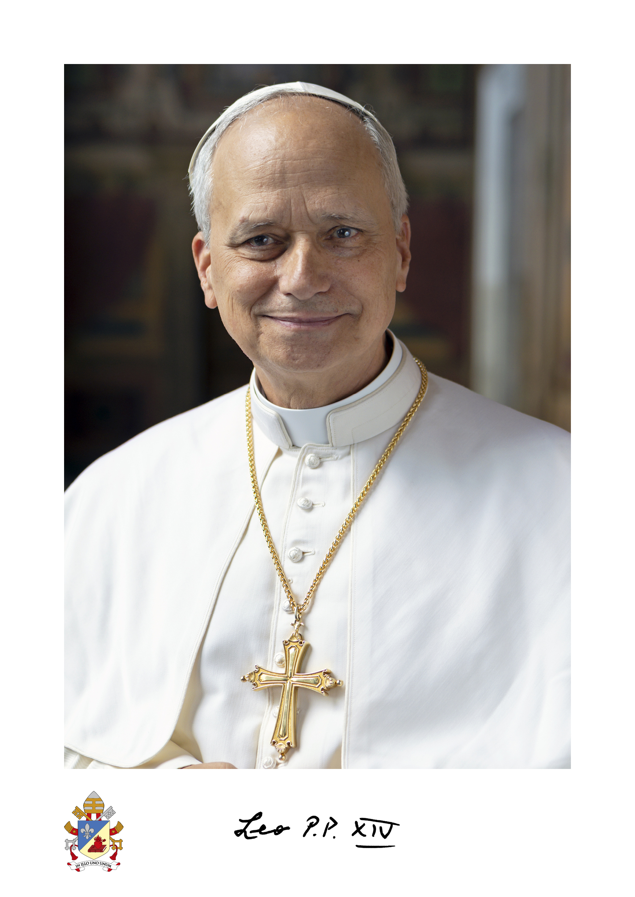

Em 8 de maio de 2025, a Igreja Católica celebrou a eleição do Papa Leão XIV, nascido Robert Francis Prevost, como seu 267º líder espiritual. Ele é o primeiro pontífice norte-americano e também possui cidadania peruana, refletindo sua trajetória missionária na América Latina. Em sua homilia de entronização, Leão XIV destacou a importância da unidade, reconciliação e caridade, comprometendo-se com um pontificado pastoral e dialogante.

Foto oficial divulgada pelo Vaticano no dia da eleição de Leão XIV, 8 de maio de 2025.
"Porque Deus amou o mundo de tal maneira que deu o seu Filho unigênito, para que todo aquele que nele crê não pereça, mas tenha a vida eterna." - João 3, 16